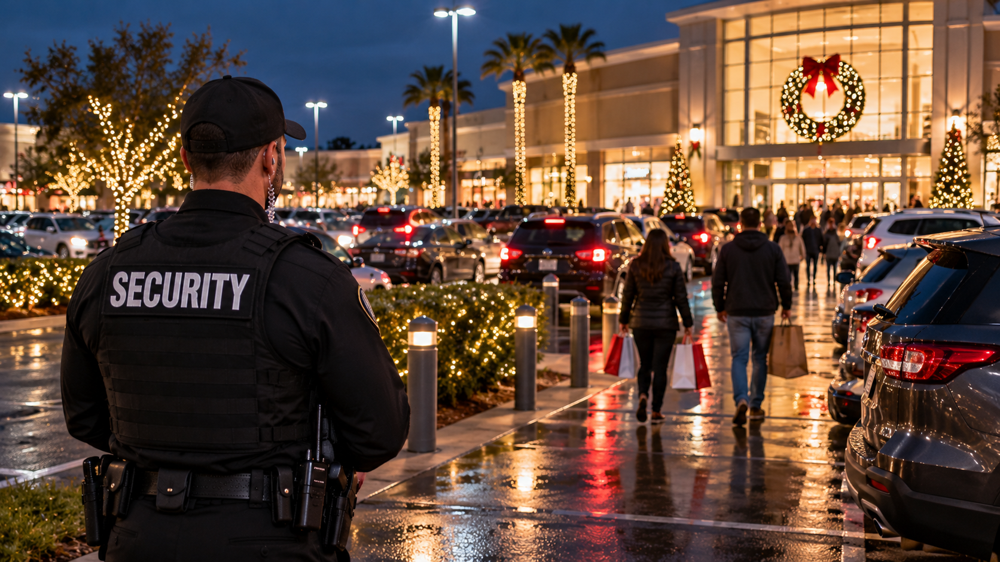

Retail
Holiday Shopping Crowds Bring New Security Concerns to Parking Lots

The shopping experience starts outside
A customer forms an impression of a shopping center before walking into a store. The first encounter is often a parking lot full of cars, delivery vehicles, pedestrians, and people carrying bags. During the holiday season those movements intensify. Visitors may be arriving after dark, employees may be closing late, and shared spaces can feel less predictable than they did during a quieter month.
Property managers know that the lot is not simply empty pavement between a street and a storefront. It is part of the customer experience. Confusing access, congestion, or a lack of visible assistance can make a property feel disorganized even when no crime has occurred. A professional security presence can be one part of maintaining an environment in which customers and employees feel supported.
Separating real research from dramatic claims
Seasonal retail theft deserves attention, but the statistics need to be described accurately. The Council on Criminal Justice examined shoplifting reports in a sample of cities and found that November and December frequently had higher reported shoplifting rates than earlier months. Its analysis also explains the limits of police reporting and differences among datasets. That finding concerns shoplifting. It does not establish that every parking lot has more vehicle break ins during December.
Shoplifting, theft from vehicles, motor vehicle theft, and violent incidents are distinct categories. They should never be combined to make a frightening headline. The Public Policy Institute of California likewise notes that changes in retail crime reporting can affect measured trends. Responsible property management begins with a clear understanding of what is known, what is uncertain, and what a particular location actually experiences.
Why customers notice the parking lot
Consider a family arriving for evening shopping. They may be carrying children, navigating unfamiliar lanes, and looking for an accessible route into a store. They notice whether the property seems orderly and whether someone is available if they need help. A security officer cannot guarantee a safe visit, but an attentive professional presence may provide reassurance and a point of contact when concerns arise.
For retail tenants, the experience outside their doors affects the impression of the businesses inside. For property managers, it affects relationships with tenants and the broader reputation of the center. Security works alongside lighting, maintenance, parking operations, and customer service rather than replacing any of them.
The employees who leave after closing
Holiday shoppers may spend an hour on the property. Employees spend entire shifts there, sometimes arriving before the stores open or leaving when most customers have gone. Seasonal workers may not know the property well, and late departures can feel different from a busy afternoon. Their experience deserves as much consideration as the shopper's.
A defined security presence can support communication when an employee reports a concern, when a disruption affects a shared space, or when management needs assistance coordinating an incident. It should not be marketed as a guarantee that crime will be prevented. The value lies in a clear, professional resource operating within an established role.
A shared property needs shared understanding
Retail centers frequently involve multiple tenants, delivery services, visitors, and property management teams. Each has different responsibilities. Legal duties depend on the circumstances, and it is inaccurate to suggest that every incident automatically makes a property owner liable. Professional security is one possible part of reasonable property operations, not a substitute for legal advice or emergency services.
When the decorations come down and the crowds disappear, customers will still remember how the property felt. A parking area that receives thoughtful attention supports the entire retail experience. During the holidays, that attention becomes especially visible.